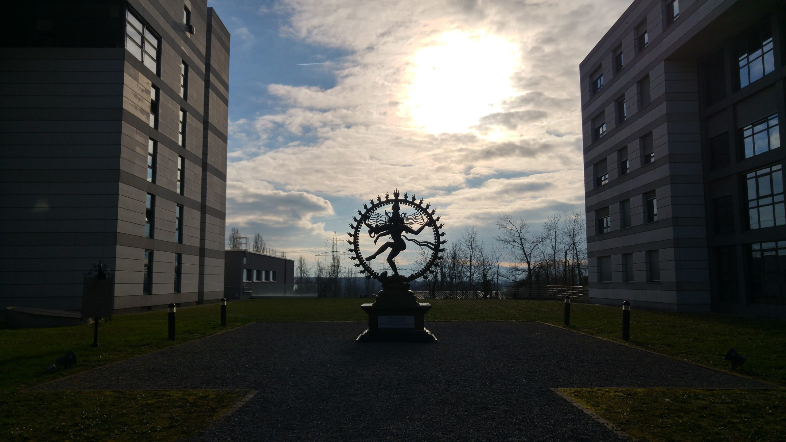
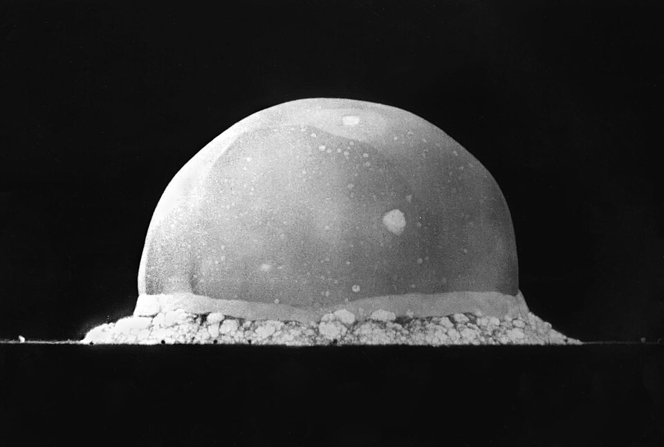
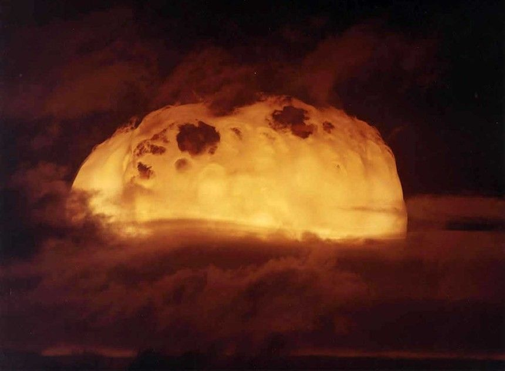

apocalipsis · ἀποκάλυψις · «quitar el velo»
apocalypse · «to lift the veil»
ni paraíso ni infierno: una danza que no ha dejado de bailarse.
neither paradise nor hell: a dance that has never stopped being danced.
acto i — la danza · act i — the dance
Shiva Nataraja baila dentro de un anillo de fuego: en una mano sostiene el tambor que crea el mundo, en la otra la llama que lo disuelve. Este balance perfecto es el equilibrio que nos hace caóticamente singulares.
Shiva Nataraja dances inside a ring of fire: in one hand he holds the drum that creates the world; in the other, the flame that dissolves it. This perfect balance is the equilibrium that makes us chaotically singular.
Por eso hay una estatua suya frente al CERN: los físicos reconocieron en «su danza» lo que ven en los aceleradores de partículas… puntos ínfimos que aparecen y se aniquilan sin pausa, materia que nunca está quieta, un cosmos que se sostiene destruyéndose.
That is why a statue of him stands outside CERN: physicists recognized in «his dance» what they see inside particle accelerators… infinitesimal points appearing and annihilating without pause, matter that is never still, a cosmos that sustains itself by destroying itself.
En esta cosmología, el «fin del mundo» es una simplificación del pralaya: la disolución cíclica, la exhalación de Brahman (la divinidad absoluta) antes de la siguiente «inhalación», la próxima iteración del baile eterno y perfecto.
In this cosmology, the «end of the world» is an oversimplification of pralaya: the cyclical dissolution, the exhalation of Brahman (the absolute divinity) before the next «inhalation» — the next iteration of the eternal, perfect dance.

acto ii — el flash · act ii — the flash
alamogordo, nuevo méxico · 16 de julio de 1945 · july 16, 1945
05:29:45
prueba trinity · primera detonación nuclear
trinity test · first nuclear detonation
«Ahora me he convertido en la Muerte, la destructora de mundos.» «Now I am become Death, the destroyer of worlds.» j. robert oppenheimer, citando el bhagavad gita (11.32)
El «apocalipsis» occidental — la prueba Trinity, las bombas atómicas de Hiroshima y Nagasaki — fue leído por su propio creador a través de un texto hindú. Occidente inventó el fin del mundo y necesitó Oriente para nombrarlo.
The Western «apocalypse» — the Trinity test, the atomic bombs of Hiroshima and Nagasaki — was read by its own creator through a Hindu text. The West invented the end of the world, and needed the East to name it.

acto iii — lo que el fuego no quema · act iii — what fire cannot burn
नैनं छिन्दन्ति शस्त्राणि नैनं दहति पावकः ।
न चैनं क्लेदयन्त्यापो न शोषयति मारुतः ॥
«Las armas no lo cortan, el fuego no lo quema, el agua no lo moja, el viento no lo seca.»
«Weapons do not cut it, fire does not burn it, water does not wet it, wind does not dry it.»
bhagavad gita · 2.23 · sobre el atman · on the atman

Si el ser ya está completo — si hay algo en nosotros que no nace ni se destruye, ni siquiera por una bomba — entonces ¿qué «destruye» realmente un apocalipsis? Solo formas. Solo cuerpos, ciudades, estructuras. El «velo» que nos impide ver lo que es verdaderamente importante: lo que no puede ser comprendido con la mente, sino que solo se puede sentir con el corazón abierto.
If the self is already complete — if there is something in us that is never born and never destroyed, not even by a bomb — then what does an apocalypse actually «destroy»? Only forms. Only bodies, cities, structures. The «veil» that keeps us from seeing what truly matters: that which cannot be understood with the mind, but only felt with an open heart.
Apocalipsis, en griego, nunca significó destrucción. Significó revelación.
Apocalypse, in Greek, never meant destruction. It meant revelation.
acto iv — la flecha y la rueda · act iv — the arrow and the wheel
La segunda ley de la termodinámica dicta que la entropía solo aumenta; no obstante, el universo se enfría, las estrellas se apagan, todo se disuelve… Es «la flecha del tiempo», el apocalipsis lento que la física sí permite.
The second law of thermodynamics dictates that entropy only increases; the universe cools, the stars go out, everything dissolves… It is «the arrow of time»: the slow apocalypse that physics does allow.
La física dibuja el tiempo como una flecha recta: todo se desordena, nada regresa. El hinduismo dibuja ese mismo tiempo como una rueda: la disolución no es donde el dibujo termina, sino donde vuelve a empezar.
Physics draws time as a straight arrow: everything falls into disorder, nothing returns. Hinduism draws that same time as a wheel: dissolution is not where the drawing ends, but where it begins again.
Esta canción habla de eso mismo en otro lenguaje: de ver cómo las cosas se deshacen — y encontrar algo parecido a la paz en esa certeza.
This song speaks of the same thing in another language: watching things come undone — and finding something like peace in that certainty.
daniel caesar · entropy · 2019
banda sonora de esta pieza
leer la letra en genius ↗
pralaya — la exhalación · the exhalation
La pregunta presupone una línea recta con un «final». Pero si el tiempo es una rueda, el infierno es una estación, no un destino… y el paraíso también. La esencia no tiene inicio ni fin: nunca surgió, nunca desaparecerá. No se alcanza, se reconoce.
The question presupposes a straight line with an «ending». But if time is a wheel, hell is a station, not a destination… and so is paradise. The essence has no beginning and no end: it never arose, it will never disappear. It is not reached — it is recognized.
(y dejar que comience de nuevo · and let it begin again)